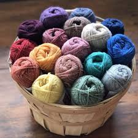
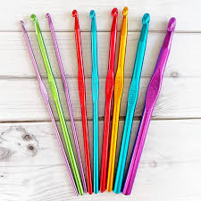
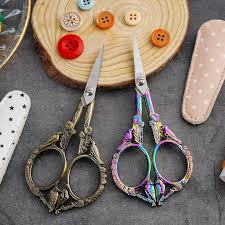
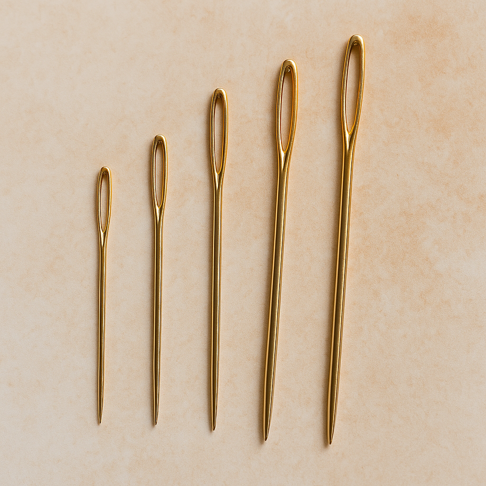
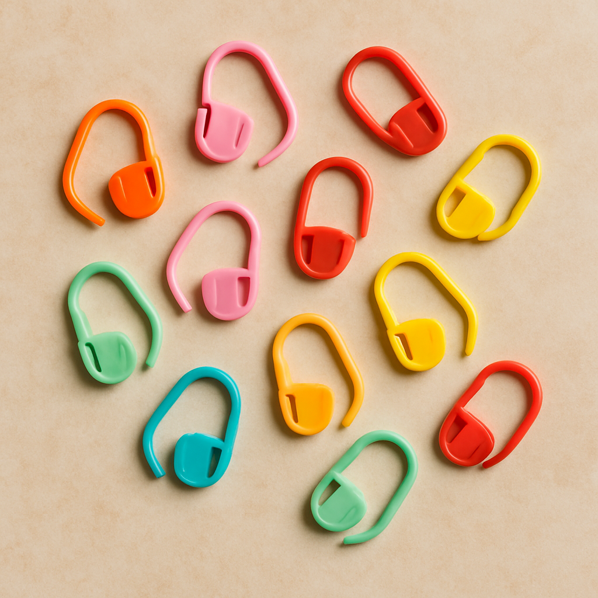

Here are the essential materials you’ll need to start your crochet journey. Choosing the right tools can make learning much easier and more enjoyable!
Yarn
Yarn comes in many types and thicknesses, known as weights, ranging from fine lace to jumbo. Beginners are best off starting with medium-weight (worsted) yarn in a light color, as it's easy to work with and makes stitches more visible. Different weights create different textures and are suited to various projects—from delicate lace items to chunky blankets.
Crochet Hook
A crochet hook is your main tool, and size matters. Beginners typically start with a size H/8 (5mm) hook—it pairs well with medium-weight yarn and is easy to handle. Hooks come in different materials like metal, plastic, or bamboo, so choose what feels comfortable.
Yarn and hook sizes are closely related. Each yarn weight works best with certain hook sizes—for example, worsted weight pairs well with a 5mm hook, while finer yarns need smaller hooks and bulkier yarns need larger ones. Yarn labels usually suggest a hook size to help you get the right tension and look.
Scissors
A small, sharp pair of scissors is essential for cutting yarn cleanly and precisely. Look for ones that are easy to handle and fit well in your crochet kit. While any sharp scissors will work, craft scissors with a fine tip make it easier to snip close to your work without fraying the yarn. Keeping a dedicated pair just for yarn can help maintain their sharpness over time.
Tapestry Needle
A tapestry needle is a large, blunt needle used to weave in yarn ends and sew pieces together. Its wide eye makes threading yarn easy, and the blunt tip lets it glide through stitches without splitting the fibers. These needles come in metal or plastic, straight or bent-tip styles—bent tips can be especially handy for weaving through tight spots in your crochet fabric.
Stitch Markers (Optional)
Stitch markers help keep track of important spots in your work—like the beginning of a round, a turning point, or a specific stitch pattern. They’re especially useful in circular projects or more complex designs. You can buy locking markers made for crochet or use simple items like safety pins, bobby pins, or even scrap yarn. They’re a small tool that can save you a lot of confusion!.